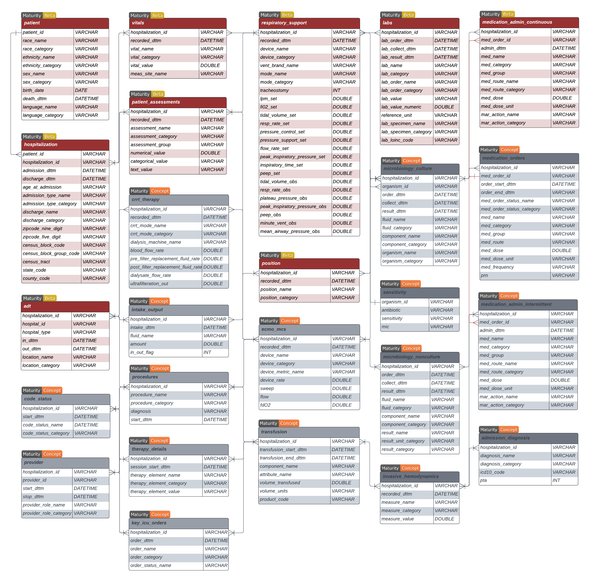

Below is the entity-relationship diagram (ERD) that provides an overview of the relational CLIF database structure.

Relational CLIF (RCLIF) is a database that is organized into clinically relevant column categories - demographics, objective measures, respiratory support, orders, and inputs-outputs. Below are sample templates for each table in R-CLIF. Here you can find detailed descriptions of each table and their fields.
You can use our custom GPT- CLIF Assistant to learn more about CLIF and develop analysis scripts using Clifford (Synthetic CLIF)
CLIF-1.0 version of this data dictionary is available here
Finalized tables
The table structure and CDE is complete for the following tables. Consortium sites have complete ETL pipelines for these tables.
Patient
| patient_id |
VARCHAR |
Unique identifier for each patient. This is presumed to be a distinct individual. |
|
| race_category |
VARCHAR |
Description of patient’s race. The source data may contain different strings for race. |
Black or African American , White, American Indian or Alaska Native, Asian, Native Hawaiian or Other Pacific Islander, Unknown, Other |
| ethnicity_category |
VARCHAR |
Description of patient’s ethnicity. The source data may contain different strings for ethnicity. |
Hispanic, Non-Hispanic, Unknown |
| sex_category |
VARCHAR |
Patient’s biological sex. |
Male , Female, Unknown |
| birth_date |
DATE |
Patient’s date of birth. |
|
| death_date |
DATE |
Patient’s death date |
|
Hospitalization
| patient_id |
VARCHAR |
Unique identifier for each patient, linking to the patient table. |
|
| hospitalization_id |
VARCHAR |
Unique identifier for each hospitalization encounter. Each hospitalization_id represents a unique stay in the hospital. |
|
| admission_dttm |
DATETIME |
Date and time the patient is admitted to the hospital. |
Datetime format should be %Y-%m-%d %H:%M:%S |
| discharge_dttm |
DATETIME |
Date and time the patient is discharged from the hospital. |
Datetime format should be %Y-%m-%d %H:%M:%S |
| age_at_admission |
VARCHAR |
Age of the patient at the time of admission. |
Age in years |
| discharge_name |
VARCHAR |
Original disposition name string recorded in the raw data. |
|
| discharge_category |
VARCHAR |
Description of the patient’s disposition when discharged, mapped to mCIDE categories. |
Home, Hospice, Acute care hospital , Still Admitted, Inpatient Rehab Facility, Skilled Nursing Facility, Long Term Care Hospital,Psychiatric Hospital, Dead, Other |
| zipcode_nine_digit |
VARCHAR |
Patient’s 9 digit zip code, used to link with other indices such as ADI and SVI. |
|
| zipcode_five_digit |
VARCHAR |
Patient’s 5 digit zip code, used to link with other indices such as ADI and SVI. |
|
| census_block_code |
VARCHAR |
15 digit FIPS code. Definition here. |
|
| census_block_group_code |
VARCHAR |
12 digit FIPS code. Definition here. |
|
| census_tract |
VARCHAR |
11 digit FIPS code. Definition here. |
|
| state_code |
VARCHAR |
2 digit FIPS code. Definition here. |
|
| county_code |
VARCHAR |
5 digit FIPS code. Definition here. |
|
ADT
| hospitalization_id |
VARCHAR |
ID variable for each patient encounter |
|
| hospital_id |
VARCHAR |
Assign an ID to each hospital in the hospital system |
|
| in_dttm |
DATETIME |
Start date and time at a particular location |
Datetime format should be %Y-%m-%d %H:%M:%S |
| out_dttm |
DATETIME |
End date and time at a particular location |
Datetime format should be %Y-%m-%d %H:%M:%S |
| location_name |
VARCHAR |
Location of the patient inside the hospital. This field is used to store the patient location from the source data. This field is not used for analysis. |
No restriction |
| location_category |
VARCHAR |
Map location_name from the source data to categories identified under CLIF. |
ER, OR, ICU, Ward, Other |
Note: Procedural areas and operating rooms should be mapped to “Other”. Intra-procedural EHR data is not represented in CLIF currently; (e.g. Anesthesia records)
Vitals
| hospitalization_id |
VARCHAR |
ID variable for each patient encounter. |
|
| recorded_dttm |
DATETIME |
Date and time when the vital is recorded. |
Datetime format should be %Y-%m-%d %H:%M:%S |
| vital_name |
VARCHAR |
This field is used to store the description of the flowsheet measure from the source data. This field is not used for analysis. |
No restriction |
| vital_category |
VARCHAR |
Map flowsheet measures stored in vital_name to the to categories identified under CLIF. |
temp_c, heart_rate, sbp, dbp, spo2, respiratory_rate, map, height_cm, weight_kg |
| vital_value |
DOUBLE |
Recorded value of the vital. Ensure that the measurement unit is aligned with the permissible units of measurements. |
temp_c = Celsius, height_cm = Centimeters, weight_kg = Kg, map = mm/Hg, spo2 = %, No unit for heart_rate, sbp, dbp, and respiratory_rate |
| meas_site_name |
VARCHAR |
Site where vital is recorded. No CDE corresponding to this variable |
No restrictions. Note: no _category CDE variable exists yet |
Labs
| hospitalization_id |
VARCHAR |
ID variable for each patient encounter. |
|
| lab_order_dttm |
DATETIME |
Date and time when the lab is ordered. |
Datetime format should be %Y-%m-%d %H:%M:%S |
| lab_collect_dttm |
DATETIME |
Date and time when the specimen is collected. |
Datetime format should be %Y-%m-%d %H:%M:%S |
| lab_result_dttm |
DATETIME |
Date and time when the lab results are available. |
Datetime format should be %Y-%m-%d %H:%M:%S |
| lab_order_name |
VARCHAR |
Procedure name for the la. This field is not used for analysis. |
|
| lab_order_category |
VARCHAR |
Permissible CDE values for lab order names. |
|
| lab_name |
VARCHAR |
Original lab name string recorded in the raw data. This field is not used for analysis. |
|
| lab_category |
VARCHAR |
43 labs identified by the CLIF consortium. |
List of lab categories in CLIF |
| lab_value |
VARCHAR |
Recorded value corresponding to a lab. Lab values are often string which can contain non-numeric results (e.g. > upper limit of detection”) |
|
| lab_value_numeric |
VARCHAR |
Parse out numeric part of the lab_value variable. |
|
| reference_unit |
VARCHAR |
Unit of measurement for that lab . |
Permissible reference values for each lab_category listed here |
| lab_type_name |
VARCHAR |
Type of lab. (e.g. standard, POC) |
No restrictions. |
Example:
Note: The lab_value field often has non-numeric entries that are useful to make project-specific decisions. A site may choose to keep the lab_value field as a character and create a new field lab_value_numeric that only parses the character field to extract the numeric part of the string.
Microbiology
| hospitalization_id |
VARCHAR |
ID variable for each patient encounter. |
|
| test_id |
VARCHAR |
An ID for a specific component, such as a gram culture smear, taken from a fluid sample with a unique order and collection time, if two different pathogens are identified, the result will be recorded as two separate rows, each sharing the same test_id. |
|
| order_dttm |
DATETIME |
Date and time when the test is ordered. |
Datetime format should be %Y-%m-%d %H:%M:%S |
| collect_dttm |
DATETIME |
Date and time when the specimen is collected. |
Datetime format should be %Y-%m-%d %H:%M:%S |
| result_dttm |
DATETIME |
Date and time when the results are available. |
Datetime format should be %Y-%m-%d %H:%M:%S |
| fluid_name |
VARCHAR |
Cleaned fluid name string from the raw data. This field is not used for analysis. |
No restriction. Check this file for examples: clif_vocab_microbiology_fluid_ucmc.csv |
| fluid_category |
VARCHAR |
Fluid categories defined according to the NIH common data elements. |
CDE NIH Infection Site |
| component_name |
VARCHAR |
Original componenet names from the source data. |
No restriction |
| component_category |
VARCHAR |
Map component names to the categories identified under CLIF. |
culture, gram stain, smear |
| organism_name |
VARCHAR |
Cleaned oragnism name string from the raw data. This field is not used for analysis. |
No restriction. Check this file for examples: clif_vocab_microbiology_organism_ucmc.csv |
| organism_category |
VARCHAR |
Organism categories defined according to the NIH common data elements. |
CDE NIH Organism |
Respiratory_support
| hospitalization_id |
VARCHAR |
ID variable for each patient encounter |
|
| recorded_dttm |
DATETIME |
Date and time when the device started |
Datetime format should be %Y-%m-%d %H:%M:%S |
| device_name |
VARCHAR |
Includes raw string of the devices. Not used for analysis |
Example mapping for device name to device category |
| device_category |
VARCHAR |
Includes a limited number of devices identified by the CLIF consortium |
Vent, NIPPV, CPAP, High Flow NC, Face Mask, Trach Collar, Nasal Cannula, Room Air, Other |
| mode_name |
VARCHAR |
Includes raw string of the modes. Not used for analysis |
Example mapping for mode name to mode category |
| mode_category |
VARCHAR |
Limited number of modes identified by the CLIF consortium |
Assist Control-Volume Control, , Pressure Control, Pressure-Regulated Volume Control, SIMV, Pressure Support/CPAP,Volume Support, Blow by, Other |
| tracheostomy |
BOOLEAN |
Indicates if tracheostomy is performed |
0 = No, 1 = Yes |
| fio2_set |
DOUBLE |
Fraction of inspired oxygen set |
|
| lpm_set |
DOUBLE |
Liters per minute set |
|
| tidal_volume_set |
DOUBLE |
Tidal volume set (in mL) |
|
| resp_rate_set |
DOUBLE |
Respiratory rate set (in bpm) |
|
| pressure_control_set |
DOUBLE |
Pressure control set (in cmH2O) |
|
| pressure_support_set |
DOUBLE |
Pressure support set (in cmH2O) |
|
| flow_rate_set |
DOUBLE |
Flow rate set |
|
| peak_inspiratory_pressure_set |
DOUBLE |
Peak inspiratory pressure set (in cmH2O) |
|
| inspiratory_time_set |
DOUBLE |
Inspiratory time set (in seconds) |
|
| peep_set |
DOUBLE |
Positive-end-expiratory pressure set (in cmH2O) |
|
| tidal_volume_obs |
DOUBLE |
Observed tidal volume (in mL) |
|
| resp_rate_obs |
DOUBLE |
Observed respiratory rate (in bpm) |
|
| plateau_pressure_obs |
DOUBLE |
Observed plateau pressure (in cmH2O) |
|
| peak_inspiratory_pressure_obs |
DOUBLE |
Observed peak inspiratory pressure (in cmH2O) |
|
| peep_obs |
DOUBLE |
Observed positive-end-expiratory pressure (in cmH2O) |
|
| minute_vent_obs |
DOUBLE |
Observed minute ventilation (in liters) |
|
| mean_airway_pressure_obs |
DOUBLE |
Observed mean airway pressure |
|
|
|
|
|
Medication_admin_continuous
| hospitalization_id |
VARCHAR |
ID variable for each patient encounter |
|
| med_order_id |
VARCHAR |
Medication order id. Foreign key to link this table to other medication tables |
|
| admin_dttm |
DATETIME |
Date and time when the medicine was administered |
Datetime format should be %Y-%m-%d %H:%M:%S |
| med_name |
VARCHAR |
Original med name string recorded in the raw data for a limited number of labs identified by the CLIF consortium |
Example mapping of med_name to med_category |
| med_category |
VARCHAR |
Limited number of medication categories identified by the CLIF consortium |
List of continuous medication categories in CLIF |
| med_route |
VARCHAR |
eod of medicine delivery |
|
| med_dose |
VARCHAR |
quantity taken in dose |
|
| med_dose_unit |
VARCHAR |
unit of dose |
|
Note: The medication_admin_intermittent table has exactly the same schema. The consortium decided to separate the medications that are administered intermittenly from the continuously administered medications.
Position
| hospitalization_id |
VARCHAR |
ID variable for each patient encounter. This table only includes those encounters that have proning documented ever. |
|
| recorded_dttm |
DATETIME |
Date and time when the vital is recorded. |
Datetime format should be %Y-%m-%d %H:%M:%S |
| position_name |
VARCHAR |
This field is used to store the description of the position from the source data. This field is not used for analysis. |
No restriction |
| position_category |
VARCHAR |
Map position_name to the to categories identified under CLIF. |
prone, not_prone |
In progress tables
Consortium has agreed to construct these tables but details of the table structure and CDE remain undecided
Dialysis
| hospitalization_id |
VARCHAR |
ID variable for each patient encounter |
|
| start_dttm |
DATETIME |
Start date and time of dialysis session |
Datetime format should be %Y-%m-%d %H:%M:%S |
| stop_dttm |
DATETIME |
Stop date and time of dialysis session |
Datetime format should be %Y-%m-%d %H:%M:%S |
| dialysis_type |
VARCHAR |
Type of dialysis performed |
intermittent, peritoneal, crrt |
| dialysate_flow_amount |
DOUBLE |
Amount of dialysate flow |
|
| ultrafiltration_amount |
DOUBLE |
Amount of ultrafiltration |
|
ECMO_MCS
| hospitalization_id |
Unique identifier for the hospitalization event. |
| start_dttm |
Date and time when ECMO/MCS support started. |
| end_dttm |
Date and time when ECMO/MCS support ended. |
| device_name |
Name of the ECMO/MCS device used. |
| device_category |
Category of the ECMO/MCS device. |
| device_metric_name |
String that captures the measure of work rate of the device, e.g., RPMs. |
| device_rate |
Numeric value of work rate, e.g., 3000 RPMs. |
| flow |
Blood flow in L/min. |
| sweep |
Gas flow rate in L/min. |
Intake_Output
| hospitalization_id |
Unique identifier for the hospitalization event. |
| intake_dttm |
Date and time of intake. |
| fluid_name |
Name of the fluid administered. |
| amount |
Amount of fluid administered (in mL). |
| in_out_flag |
Indicator for intake or output (1 for intake, 0 for output). |
Therapy_Session
| hospitalization_id |
Unique identifier for the hospitalization event. |
| session_id |
Unique identifier for the therapy session. |
| session_start_dttm |
Date and time when the therapy session started. |
| session_end_dttm |
Date and time when the therapy session ended. |
Therapy_Details
| session_id |
Unique identifier for the therapy session. |
| therapy_element_name |
Name of the therapy element. |
| therapy_element_category |
Category of the therapy element. |
| therapy_element_value |
Value associated with the therapy element. |
Microbiology_Nonculture
| hospitalization_id |
Unique identifier for the hospitalization event. |
| result_dttm |
Date and time when the non-culture result was obtained. |
| collect_dttm |
Date and time when the sample was collected. |
| order_dttm |
Date and time when the test was ordered. |
| fluid_name |
Name of the fluid sample. |
| component_category |
Category of the component tested. |
| result_unit_category |
Unit category of the test result. |
| result_category |
Category of the test result. |
Tables under consideration
Tables that are in the concept phase that the consortium has not yet committed to implementing.
Clinical Decision Support